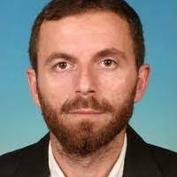

Intelligent CNC & toolpath optimization
Tool selection, genetic algorithms for cutting conditions, and time-efficient machining—including collaborative work on machine performance and magazine/tool positioning.

University of Prishtina · Faculty of Mechanical Engineering
Associate Professor · Manufacturing, automation & CNC systems
Prof. Afrim’s work connects advanced manufacturing with industry practice: intelligent CNC programming, process optimization, and metal-cutting research, alongside long-term training and applied engineering projects in Kosovo and the region.
Metal cutting and machining; CNC programming and toolpath optimization; CAD/CAM; genetic algorithms and intelligent methods for process optimization; surface quality and cutting forces; simulation and layout of production systems; welding and related mechanical topics in collaboration with colleagues.
Bridging academic rigor with shop-floor relevance—students learn methods that mirror how modern factories program, measure, and improve processes. Industry projects and trainer work inform examples used in the classroom.
Tool selection, genetic algorithms for cutting conditions, and time-efficient machining—including collaborative work on machine performance and magazine/tool positioning.
Milling surface roughness, cutting force optimization, and experimental approaches using computational intelligence.
Modular CNC design, welding robot layout for aluminium frames, production-line layout using FlexSim, and vehicle suspension design (collaborative).
Experience converting manual machines to CNC, FMS-style design in Inventor, and continuous professional training with GIZ and KIMERK in metal cutting, plasma, and additive topics.
| Lenda | Semestri | Viti | Linku |
|---|---|---|---|
| Automatizimi i prodhimtarisë | |||
| Bazat e metrologjisë | |||
| CAD dhe modelim i produktit | |||
| CAD/CAM | |||
| Fonderitë | |||
| Fonderitë | |||
| Makinat CNC | |||
| Makinat për përpunimin e materialeve polimere | |||
| Pajisjet ndihmëse | |||
| Përpunimi i materialeve polimere | |||
| Përpunimi me prerje | |||
| Përpunimi me prerje I | |||
| Saldimi | |||
| Teknologjia e përpunimit të drurit | |||
| Teoria e përpunimit me prerje |
| Lenda | Semestri | Viti | Linku |
|---|---|---|---|
| Menaxhimi i teknologjisë, inovacioneve dhe zhvillimit | |||
| Menaxhmenti strategjik | |||
| Pajisjet ndihmëse | |||
| Përpunueshmëria e materialeve | |||
| Projektimi i fabrikave |